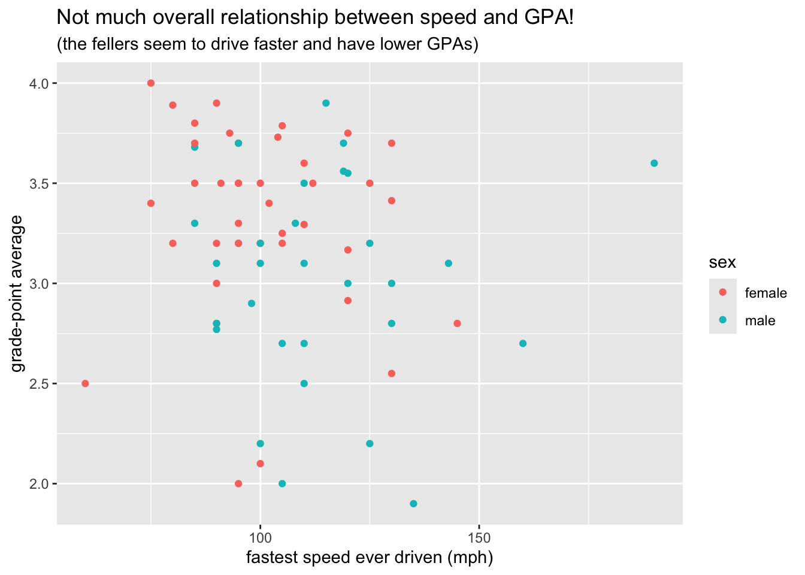
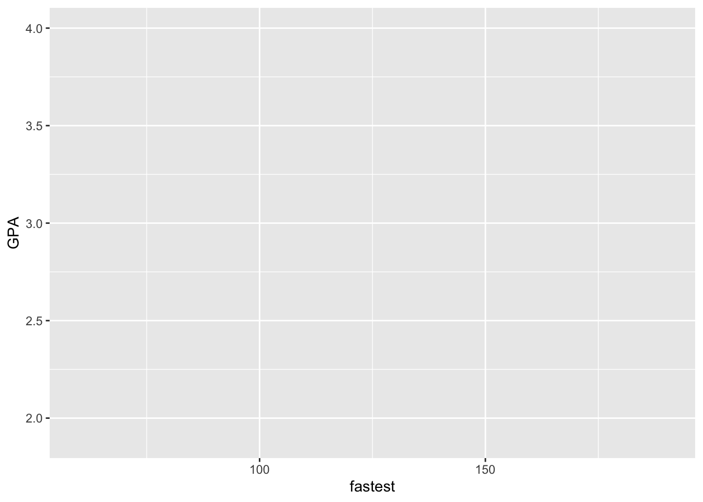
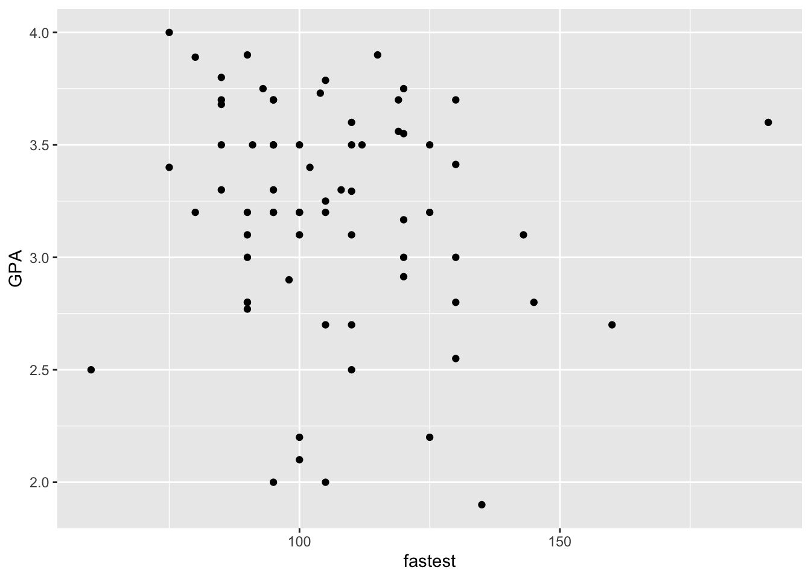
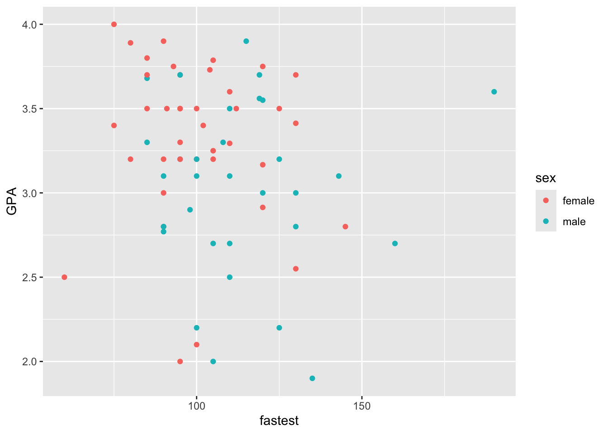

library(ggplot2)library(bcscr) # for m111survey data
Here is our target graph. Let’s build it, step by step.
First, set up the frame.
ggplot(m111survey, aes(x = fastest, y = GPA))
Next, the glyphs.
ggplot(m111survey, aes(x = fastest, y = GPA)) +geom_point()
You can include ane or more aesthetic mappings for the glyph.
ggplot(m111survey, aes(x = fastest, y = GPA)) +geom_point(aes(color = sex))
Now think about the labels.
ggplot(m111survey, aes(x = fastest, y = GPA)) +geom_point(aes(color = sex)) +labs(x ="fastest speed ever driven (mph)",y ="grade-point average",title ="Not much overall relationship between speed and GPA!",subtitle ="(the fellers seem to drive faster and have lower GPAs)" )
Label for the x-axis:
x ="fastest speed ever driven (mph)"
Label for the y-axis:
y ="grade-point average"
Title and subtitle:
title ="Not much overall relationship between speed and GPA!",subtitle ="(the fellers seem to drive faster and have lower GPAs)"
And there you have it!




Source Code
---title: "Building a Graph in ggplot2"editor: sourceformat: closeread-html: remove-header-space: true code-tools: true cr-style: narrative-text-color-sidebar: white narrative-font-family: 'Georgia, "Times New Roman", Times, serif' narrative-font-size: 1.1rem narrative-sidebar-width: minmax(625px, 1fr) narrative-border-radius: 5px narrative-background-color-overlay: "#111111dd" narrative-background-color-sidebar: "#111111" section-background-color: white---```{=html}<style> #quarto-document-content h1 { font-weight: 500; font-size: 2.3em; line-height: 1.1; margin-top: 0; } .cr-section .narrative-col > *:first-child { padding-block-start: 10svh; } .cr-section { margin-bottom: 30px; }</style>``````{r}#| include: falselibrary(ggplot2)library(bcscr)knitr::opts_chunk$set(warning =FALSE,message =FALSE,error =TRUE,fig.align ="center")```::: {.cr-section}# Building a Graph in ggplot2:::{focus-on=""}Packages that we will use:```{r}#| echo: true#| eval: falselibrary(ggplot2)library(bcscr) # for m111survey data```:::Here is our target graph. Let's build it, step by step. @cr-mygraph::: {#cr-mygraph .scale-to-fill}```{r}ggplot(m111survey, aes(x = fastest, y = GPA)) +geom_point(aes(color = sex)) +labs(x ="fastest speed ever driven (mph)",y ="grade-point average",title ="Not much overall relationship between speed and GPA!",subtitle ="(the fellers seem to drive faster and have lower GPAs)" )```::::::{#cr-frame .scale-to-fill}```{r}#! echo: true#! eval: falseggplot(m111survey, aes(x = fastest, y = GPA))```::::::{focus-on="cr-frame"}First, set up the frame.```rggplot(m111survey, aes(x = fastest, y = GPA))```::::::{focus-on="cr-glyphs"}Next, the glyphs.```rggplot(m111survey, aes(x = fastest, y = GPA)) +geom_point()```::::::{#cr-glyphs .scale-to-fill}```{r}#! echo: true#! eval: falseggplot(m111survey, aes(x = fastest, y = GPA)) +geom_point()```::::::{focus-on="cr-aes"}You can include ane or more aesthetic mappings for the glyph.```rggplot(m111survey, aes(x = fastest, y = GPA)) +geom_point(aes(color = sex))```::::::{#cr-aes .scale-to-fill}```{r}#! echo: true#! eval: falseggplot(m111survey, aes(x = fastest, y = GPA)) +geom_point(aes(color = sex))```::::::{focus-on="cr-mygraph" .scale-to-fill}Now think about the labels.```rggplot(m111survey, aes(x = fastest, y = GPA)) +geom_point(aes(color = sex)) +labs(x ="fastest speed ever driven (mph)",y ="grade-point average",title ="Not much overall relationship between speed and GPA!",subtitle ="(the fellers seem to drive faster and have lower GPAs)" )```:::::: {focus-on="cr-mygraph" pan-to="0%, -90%" scale-by="2.0"}Label for the x-axis:```rx ="fastest speed ever driven (mph)"```:::@cr-mygraph::: {focus-on="cr-mygraph" pan-to="90%, 0%" scale-by="2.0"}Label for the y-axis:```r y ="grade-point average"```::: @cr-mygraph::: {focus-on="cr-mygraph" pan-to="30%, 90%" scale-by="1.7"}Title and subtitle:```rtitle ="Not much overall relationship between speed and GPA!",subtitle ="(the fellers seem to drive faster and have lower GPAs)"```:::@cr-mygraphAnd there you have it!:::